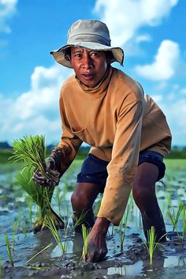
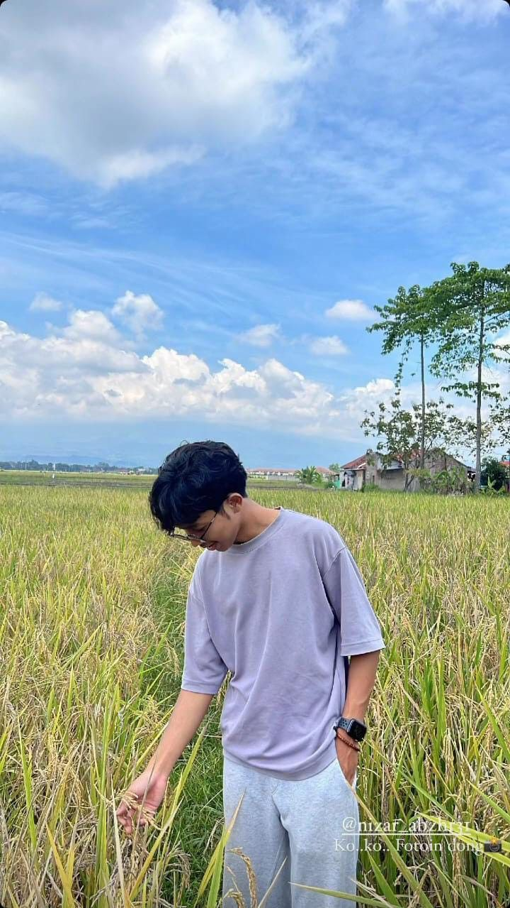
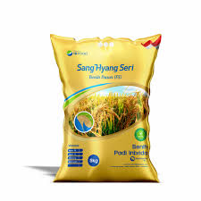
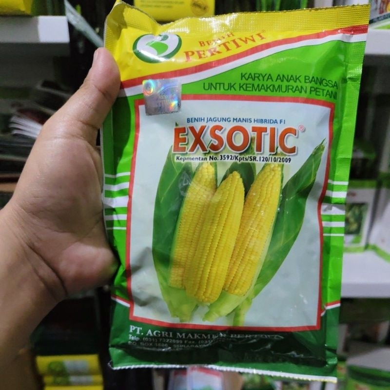
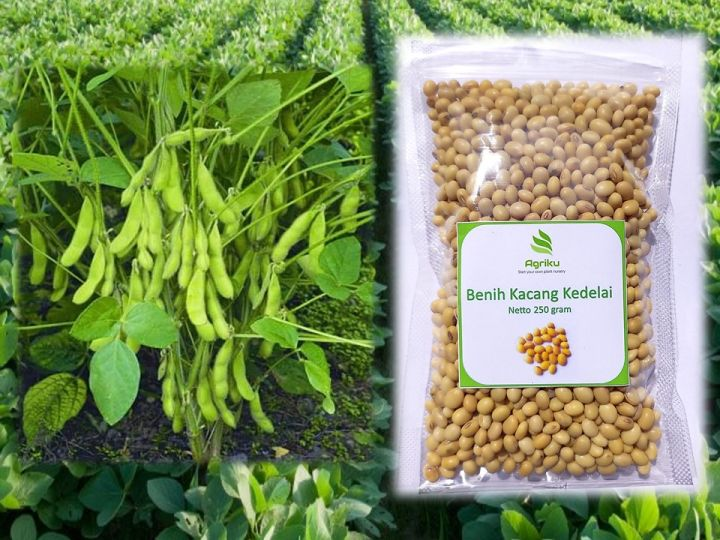
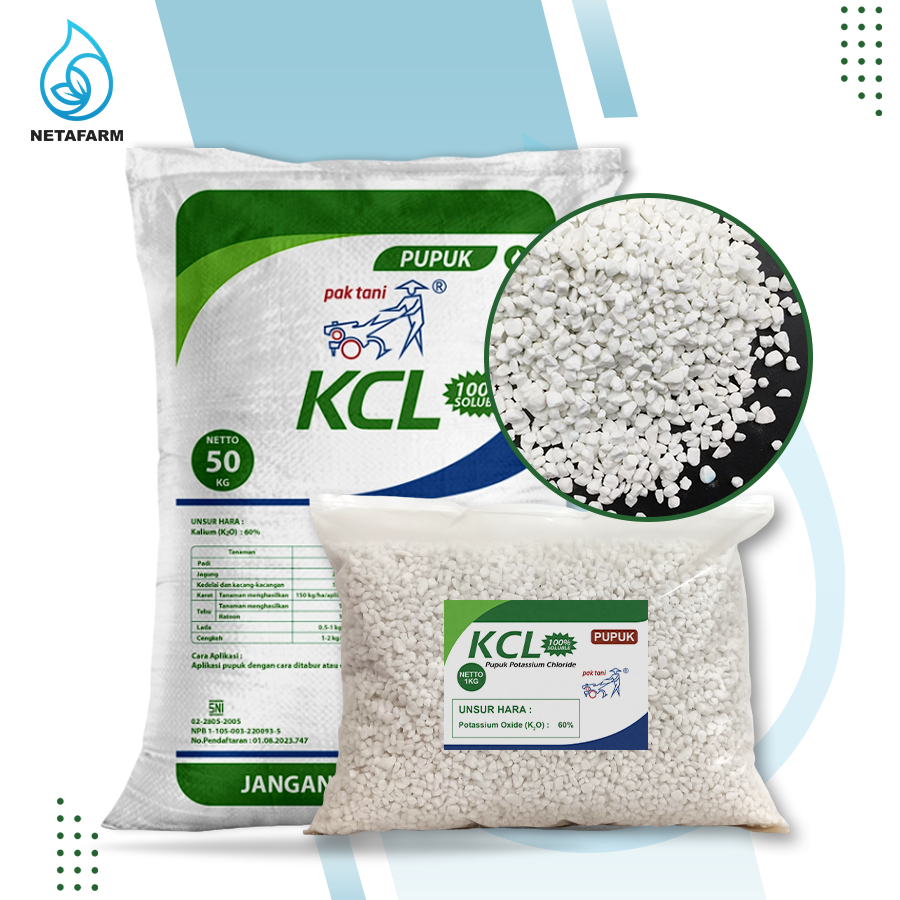
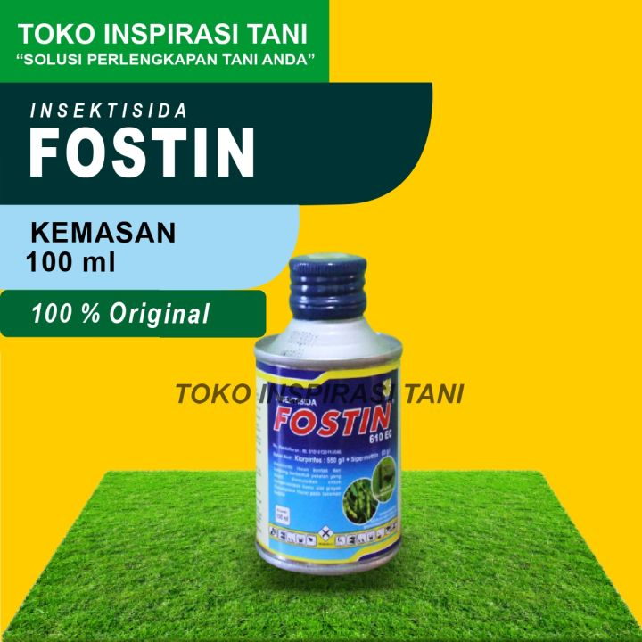

Total Pengguna
1,284
Total Lahan
3,592 Ha
Total Musim Aktif
42
Total Hasil Panen
842.5 Ton
Pertumbuhan Sistem
Data pendaftaran user baru 6 bulan terakhir
JanFebMarAprMeiJun
Aktivitas Terbaru
Lihat SemuaPetani Baru Terdaftar
Budi Santoso telah bergabung.
Budi Santoso telah bergabung.
Lahan Baru Diverifikasi
Lahan Jagung - Blok C, Jawa Timur.
Lahan Jagung - Blok C, Jawa Timur.
Laporan Panen Selesai
Musim tanam padi selesai.
Musim tanam padi selesai.
Anomali Sensor Terdeteksi
Node sensor 04 perlu ditinjau.
Node sensor 04 perlu ditinjau.
Manajemen Pengguna Terbaru
Filter Peran| Nama Pengguna | Peran | Lokasi Lahan | Status | Aksi |
|---|---|---|---|---|
Ahmad Subarjo ahmad@agrotrack.test | Petani | Sidoarjo, Jawa Timur | Aktif | |
 Lina Marlinalina@agrotrack.test | Petani | Malang, Jawa Timur | Aktif | |
 Dedi Yusmandedi@agrotrack.test | Investor | - | Offline |
Data Tanaman Prioritas
Padi, jagung, cabai, dan bawang merah menjadi komoditas dengan aktivitas tertinggi minggu ini.
Buka MonitoringKatalog Komoditas & Sarana Produksi
Dipakai admin untuk validasi data tanaman, benih, pupuk, dan obat yang sering diinput petani.

Bibit Padi
Referensi benih untuk komoditas padi sawah.

Bibit Jagung
Benih jagung untuk lahan kering dan rotasi.

Bibit Kedelai
Benih kedelai untuk komoditas rotasi.

Pupuk KCL
Masuk kategori pupuk untuk validasi biaya.

Insektisida
Referensi obat saat monitoring hama.